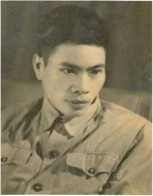

Uốn thẳng lưng ra thì ta với được trời xanh."
10/9
Tôi đã biết những gì về Hà Nội? Tôi nhớ những năm tôi 17, 19 tuổi, những năm đó tôi biết Hà Nội nhu một cái gì tột độ của những sự văn minh, hào hoa, tôi rất ghét. Vì ngày đó Hà Nội là Hà Nội của Pháp Nhật, của nhũng Hoà Truờng, những Louis Chức gì đó... Vì ngày đó, tôi lại cũng là đồ đệ của những Rimbaud, những Lão Trang, phần đúng không nói, phần sai là muốn như những người muốn bỏ "xã hội văn minh" đi sống với Mọi, Mán,... với những châu Phi, những hoang đảo cô quạnh, những rừng vierges nào đó... Hồi đó tôi mơ những cuộc đi hàng tháng trên bãi sa mạc, tôi mơ những cuộc sống "làng nọ cách làng kia thật xa, không nghe thấy tiếng gà của nhau", tôi mơ những xã hội như con ngựa không cần ai cầm cương mà nó sẽ cứ đi rất tự nhiên, rất tốt theo chiều hướng "biện chứng" của nó... Hồi đó tôi mới 19 tuổi... Tôi chẳng đi Phi châu, hoang đảo nào cả. Mà lại đi trong những Rimbaud, những ỉỉỉumỉnatỉons; và đi trong những Ngõ Bò, những impasses, những ngõ tối những cửa ô; và tôi đã nói tới những haschisch những bạch phiến; và tôi đã viết những câu thơ và lòi tuyên ngôn báo Dạ Đài...

Trần Dần, thời gian trong quân ngũ
⚝ ⚝ ⚝
Ngày đó tôi cũng có hai con mắt và hai cái tai. Nên tôi cũng đã nhìn thấy "Tây đầm", thấy "cái thằng Nhật", đêm tôi nghe thấy tiếng đàn pỉano nhà dưới, và nghe lẫn tiếng xe bò nhà pha chở xác chết (năm đói 45)... Nhưng những cái đó vào thơ tôi nó thành ra khác cả: tôi nói những ác vương... nhũng nấm mộ... những tuyền đài... những vì sao... những đắm thuyền... những trần ai... những ta bỏ trần ai và nhũng ta điên ta cuồng...
Ngày đó tôi nói những vivre (...). Tôi nói không có luân lý và đạo đức gì cả. Không có dư luận nào đáng kể. Mà chỉ có sáng tạo. Sống là tự thể hiện Bản sắc tói cao độ. Tôi nói Bản sắc cao độ là bao giờ cũng dialetìqueì Bản năng là sáng suốt nhất, là sáng tạo nhất, là cái quý nhất của con người, là sống nhất. Tôi đọc cả Marx, cả Bergson, và tôi thích cả hai bên. Tôi nói, "tôi cứ sống theo tôi, đó là luân lý và đạo đức cao nhất", - đó là sống có nghĩa nhất, - đó là Sáng tạo nhất, - và đó là Nghệ thuật nhất... Tôi muốn làm "một vì sao chổi", rơi một vệt rất dữ dội, đỏ rực bầu tròi bao la của cuộc sống và của nghệ thuật... Tôi muốn lập những club "je m'en foutiste... ", - những "j'expaspère le bourgeois...", những "bất phuơng" và những "vô vi". Tôi muốn vẽ "thật xấu mà thật đẹp". Làm thơ "thật trục trặc, thật loạn xị mà lại thật nhịp nhàng". Sống "rất đểu mà rất tốt", "rất hung dữ mà lại rất từ bi", "rất bất phuơng, rất vô vi mà lại hóa ra hành động và sáng tạo bậc nhất"! Những ngày đó tôi túng lắm. Đói lắm. Tôi nhớ em H, không có em anh còn nhịn nhiều hơn. Tôi sống thiêù não, có phút nào là không có gió lốc cơn giông? Những lúc đi trên vỉa hè là những lúc tôi nhìn Hà Nội bằng những con mắt sauvage. Nhung những lúc ngồi một mình trong phòng, mới là nhũng lúc sauvage nhất. Tôi biết rằng không có gì ghê gớm hơn tôi trong nhũng lúc tôi ngồi im lặng...
Đó, tôi biết về Hà Nội nhiều nhất, thấm thìa nhất là nhu vậy...
Hôm nay tôi muốn viết gì về Hà Nội?
Tôi biết một số nguời Hà Nội.
Đây là anh Nguyễn Đình Thi. Anh ta đã làm ra bài hát Người Hà Nội. Anh ta lắm tài, nói hay, trẻ và thông minh, - lắm tài nhung cái chính của anh là thơ. Chín năm nay anh đã làm những việc: đại biểu quốc hội, biên tập báo Văn nghệ, ủy viên Tiểu ban Văn nghệ Đảng, chính trị viên phó tiêù đoàn 54 trong mấy chiến dịch Trung Lào, Điện Biên, - và tiểu thuyết gia, - và nhạc sĩ, - và thi sĩ vân vân... Anh có nhiều khó khăn đau xót, vợ ốm con đói, nhung không thấy anh nói chuyện ấy mấy khi. Anh ta người lúc nào cũng như một con giông. Anh làm việc thì gớm lắm, ai cũng phục năng suất của anh, thức đêm thức hôm, bỏ giấc ngứ trưa v.v... Anh là một người Hà Nội.
Anh Văn Cao này. Cũng rất lắm tài... nào vẽ, nào thơ, nào nhạc... Anh ta đã làm ra bài hát mà dân ta chọn làm Quốc ca... Người ta nhớ nhiều như bài Sông Lô anh làm sau chiến thắng Việt Bắc. Anh cũng có nhiều khó khăn: vợ yếu, mảnh khảnh, thiếu sữa cho con. Con anh lớn lên mà sống được, không phải vì sữa vói cơm, mà chắc vì nó là người Việt Nam thôi. Anh VCao đó cũng là một người Hà Nội.
Anh Sửu này: hai đời công nhân sở máy cưa Hà Nội. Ngày nô súng thủ đô anh cắn răng giữ khu Bạch Mai. Máu anh đổ cùng máu những công nhân khác [...] Tôi biết những anh Tú, anh Tắc, anh Chắt v.v...: những cán bộ của Trung đoàn Thủ đô. Những người Hà Nội ra đi kháng chiến, bây giờ lên cán bộ cả. [...] Tại sao cả những thi sĩ nông dân chưa biết Hà Nội cũng thích Hà Nội? [...] Và tại sao có những "anh em" không yêu Hà Nội? Có phải tại nghe người ta nói: "kiêù Hà Nội, con gái Hà Nội, chợ Đồng Xuân, v.v..."? [...]
12-14/9
Môt vấn đề cần nghiên cứu:
Quy luât của cuôc sổng trong Chiến tranh chuyến sang Hoà bình
Từ ngày hôm qua sang ngày hôm nay là chuyển hẳn từ hai chữ Chiến tranh sang hai chữ Hòa bình. Những tiếng đồng hồ này nó có một giá trị đặc biệt. Dần dần nguôi ta mới thấy giá trị của những tiếng đồng hồ đó. Số mệnh, nhiệm vụ của hàng triệu con nguôi thay đổi hẳn. Nhung [...] sự thay đổi nó dần dà, góp gió góp gió mãi, tôi đợi một con Bão chua lên.
Tôi đã thấy những gì? Nhũng ngày cuối Chiến tranh, nhũng ngày đầu Hoà bình tôi đã nghĩ rất nhiều. Tôi nghĩ đến công tác, đến đòi sống của tôi. Tôi nghĩ trong chiên tranh tôi đã làm đuợc những gì? Khó trả lòi quá. Tôi đã mất những gì? Tôi đã đuợc nhũng gì? Sao tôi thấy nhũng cái đuợc ấy nó chua xót quá. Tôi đuợc những cái mà nghĩ đến là kèm theo những suy nghĩ, những im lặng, những khó nói, nếu không phải là những mất mát, những buồn bực, chua xót và thở dài. Bài tho tôi mới làm đây có nguời bảo là bi quan, có nguời bảo là loạn quá. Tôi đuợc những câu tho nhu vậy chăng? Xua kia tôi là một thằng bất phuong, vô chủ nghĩa. Je m'enfoutiste. Vào chiến tranh có nhiều lần nhiều lúc tôi học làm một anh không bất phuong nữa. Không m'en foutiste nữa. Mà cố học trách nhiệm, cân nhắc, chú ý... Tôi đã gạt bỏ nhũng điều tôi biết, cả đúng lẫn sai. Tôi định simplifier tôi đi, giản đơn hoá. Tôi nói "Không" với dĩ vãng và "ừ" với mọi điều người ta nói vói tôi. Nhiều buổi tôi đã thành một người máy móc hẳn hoi. Và những ngày ấy tôi không sáng tác gì nữa. Tôi có một mâu thuẫn chưa giải quyết được. Là xu hướng của tôi đòi hỏi một thứ Thơ khác, nó trái ngược vói sự đòi hỏi về Thơ của xung quanh, cấp trên và bạn bè.
Tôi nói về Thơ nhiều.
Vì đối với tôi, đó là vâh đề sinh tử, ước mơ và nguyện vọng, chủ nghĩa và lý tưởng, đời sống và nghệ thuật, Thơ đối vói tôi có nghĩa của chữ Cách mạng, chữ Đấu tranh, chữ Cuộc đòi, chữ Giai cấp của tôi. Cho nên Thơ tôi thế nào, làm được hay bế tắc, làm hay hay làm dở, - đó tức là trả lời những câu hỏi: tôi đã làm gì trong chiến tranh? tôi đã được và đã mất nhũng gì?
Trước kia tôi muốn Thơ tôi thế nào?
Thời đó tôi muốn một thứ Thơ như một cơn mộng ác, trong đó người ta giận dữ, người ta điên cuồng, người ta lồng lộn, người ta sống hỗn độn, đang Bắc sang Đông, vừa ở Bắc lại vừa ở Đông. Người ta có thê’ bất phương chủ nghĩa, tự thả mình theo quy luật một thứ biện chứng duy tâm, những hình ảnh thơ nóng bỏng, cháy như lửa, một hình ảnh ánh lên nhiêu hình ảnh, hình ảnh nọ chống đối hình ảnh kia, hoà hợp nhau, lôi kéo nhau trong một điệu nhảy ma quỷ... Đúng là: một cuộc sống chaotique, nhưng một cái chaos có harmonie của nó. Một điệu ãanse macabre có cái thần tiên của nó. Một cái hỗn độn có cái trật tự của nó. Và cái harmonie, cái thần tiên, cái trật tự đó là tuỳ theo
tiêu chuẩn tôi cho là: ý thích của tôi. Mà ý thích của tôi là theo tiêu chuẩn tối cao! Đó là so luợc cái mo uớc ngày tôi 18,19 tuổi.
Vào chiến tranh, tôi muốn Thơ tôi thế nào?
Có những ngày và nhiều ngày tôi không nghĩ tới nữa. Lại cũng có những ngày tự dung tôi nghĩ rất nhiều. Có lúc tôi tuởng nhu nắm chân lý trong tay rồi. Có lúc tôi tuởng nhu mất cả cuộc đời!
Lúc tôi muốn một thứ Thơ dễ dãi. Lúc một thứ Thơ không có vần. Lúc một thứ Thơ nhu một hạt ngọc. Lúc một thứ Thơ kể chuyện. Lúc một thứ Thơ g'ô ghề. Lúc một thứ Thơ hiền lành, có cái khoẻ cúa những bắp thịt hồng. Lúc một thứ Thơ rõ nghĩa. Lúc một thứ Thơ vừa rõ nghĩa vừa mờ 100, 1000 nghĩa khác. Lúc một thứ Thơ theo sát chính trị từng buớc một. Lúc một thứ Thơ na ná nhu của anh lính, nó mát mà lành, nó hiền mà khoẻ, nó thực tế... Lúc một thứ thơ na ná nhu bài nói của anh cán bộ, nó đả thông, nó giục giã, nó lý luận... Tôi muốn nhiều lắm, tùng mẩu, từng mẩu viết cho mình xem, không thành đuợc bài mà thành từng khúc. Tôi xem lại nhũng câu đó, tôi nói những ao uớc cộng sản, những quan niệm của tôi về lý tuởng, về con nguời, về Thơ... Tôi nói những mâù chuyên riêng, những buồn bực, đau khổ. Chả có câu nào 6, 8 cả. Nhịp thơ nhu đá, nhức cả tai... Tôi vẫn hằng nghĩ, đó là tôi chuẩn bị cho một cơn Bão sẽ tới. Tôi góp gió. Cho nên trong chiến tranh tôi mất và tôi đuợc là nhũng cái đó, chua thành cái gì cả. Tôi có thể nói chắc chắn rằng, Thơ tôi chua thành, - tức là chủ nghĩa chua đúc, lý tuởng chua chảy vào tận máu, chưa hóa thành những tế bào của cuộc đời tôi. Thơ tôi chưa thành tức là con người tôi còn đang dang dở, cuộc đòi tôi chửa có ra gì. Chiến tranh đã dạy cho tôi những điều lụn vụn, những sự thực chi tiết và bộ phận. Chiến tranh chưa tạo cho tôi thành một người có da có thịt. Tôi chưa nhìn thấy sự thực lớn lao nhất của cuộc sống. Cho nên không có lạ gì những ngày đầu tiên của Hoà bình tôi rất buồn cho những năm Chiến tranh của tôi, tôi có nhũng hối hận, những tiếc rẻ tiếc đắt, những ý nghĩ bâng quơ và nhạt mồm.
Bây giờ tôi muốn một thứ Thơ như thế nào?
Nhũng sự suy nghĩ của tôi nó kế tiếp nhau, tuy nhiều lúc tưởng rằng nó chống chọi và từ bỏ nhau hẳn. Bây giờ tôi muốn một thứ Thơ như thế nào đó giải quyết được một số nhũng mâu thuẫn giữa tôi với người ta và giữa tôi với tôi. Tôi muốn nhiều nghĩa, mờ ảo, mà người ta muốn rõ nghĩa rành mạch. Vì vậy tôi muốn một thứ Thơ nào đó có một nghĩa rõ ràng và kèm theo muôn ngàn nghĩa khác. Tôi muốn một thứ Thơ không có vần, không có kỷ luật, -người ta thích thơ dễ đọc, có vần. Vì vậy tôi muốn một thứ Thơ nào đó rất tự do nhung rất có nhịp chắc chắn, cái nhịp đó đủ sức mạnh và âm điệu để cho tự nó có thể sinh tồn, - chỗ có vần, chỗ không có vần. Nó rất nhịp nhàng, nhung đó là một cái nhịp nhàng tạo nên bằng những cái gồ ghề khúc khuỷu, chối tai, rức óc. Nhung mà những cái đó lại nhịp nhàng. Nghĩa là tất cả những cái xóc họp lại thành cái êm. Một cái êm rất xóc.
Trước kia tôi thích Thơ như một cơn mộng ác hỗn độn, -về sau tôi lại thích Thơ nó thực như là chuyện con gà, như bài nói của anh cán bộ, như lòi ca dao của anh đội viên, cho nên bây giờ tôi thích một thứ Thơ nào đó rất loạn nhưng lại rất bình... Rất nhiều chiều góc bề diện, nhưng lại chỉ có một chiều góc bề diện. Như một cơn mê, như là một sự thực tầm thường. Rất bất phương chủ nghĩa, nhưng mà bất phương theo chủ nghĩa công sản. Tôi không chơi chữ. Mà tôi rất tin rằng người cộng sản là một người đại linh động, không có công thức, định kiến, khi ẩn khi hiện, nay không mai có, lại vừa có vừa không.
Tôi thích Thơ phải có buồn có tủi, có suy nghĩ có thấm thiá, có chua xót có đau khổ, có drame, có máu có mồ hôi. Thơ đầm nước mắt. Giọt mực là giọt máu, giọt mồ hôi. Accent Thơ là nhũng accen t éo le, trái ngược, giận dữ, châm chọc, tự hào, hãnh diện, hằn học, soi mói.
Người ta muốn Thơ phải rõ ràng phấn khởi, hồng hào, êm ả.
Vì vậy bây giờ tôi muốn một thứ Thơ nào đó có cái phâh khởi của những giọt nước mắt, mồ hôi và máu đào; phâh khởi của những khói bụi, đất cát, thuốc súng, xác chết, nhà thiêu, bãi cháy, bom xé đạn thiêu; phấn khởi của những thất vọng, những điêu tàn, những chia ly, tan rã và thất bại. Tôi muốn một thang thuốc ngọt họp bởi những vị đắng và cay nhất của trái đất.
Tôi thích Thơ nó lý sự, - người ta thích Thơ không nói lý. Vì vậy bây giờ tôi thích một thứ Thơ nào đó nó lý sự bằng những tình những cảnh. Và ngược lại, những cảnh những tình nó nói lý rất sâu xa.
Tôi thích Thơ thời sự, theo sát cái hồi hộp, lo lắng của Đảng tôi, dân tôi, triệu triệu quả tim dân chúng và quân đội, chiến sĩ và cán bộ, lãnh tụ và quần chúng. Tôi lại cũng thích Thơ không thời sự, Thơ bao trùm đất nước và thòi gian, Thơ ăn lâh sang mọi thế kỷ, và Thơ nhập cả vào cái biện chứng bao la của sự vật.
Vì vậy bây giờ tôi muốn một thứ Thơ nào đó lấy đề tài ngay ở nhịp đập trước mắt của trái tim dân tộc Việt Nam, - nhung trong đề tài đó tôi đào mãi đào mãi tói khi tôi tìm thấy quả tim Nhân loại. Đó là sự thực mà cũng là ý muốn cúa tôi. Quả tim dân tộc tôi có nghĩa là quả tim Nhân loại. Nhịp đập của nó là nhịp đi của Biện chứng. Cái ngày hôm nay là dồn ép của hàng triệu năm về trước và mở ra triệu thế kỷ về sau. Tôi muốn một thứ Thơ nào đó vạch ra được sự thực đó. Hạt bụi, sợi tóc mây là cả một vũ trụ. Một khoảnh khắc là cả lịch sử của trần gian. Một thắc mắc cúa em là tất cả lo âu nhân loại.
Tôi thích Thơ chính trị. Hoan hô Đảng. Hoan hô cách mạng. Thơ khẩu hiệu: công nông binh, Hồ Chủ tịch muôn năm. Tôi lại cũng thích Thơ không chính trị. Thơ "cái đêm hôm rằm... cô Lý cô Lói cái cây đa..." Thơ một con cò, một cánh hoa, một sợi cỏ. Thơ bâng quơ.
Vì vậy bây giờ tôi muốn một thứ Thơ nào đó nó nói về vâh đề chính trị bằng một cách không chính trị gì cả. Ngược lại, nó nói những cái không chính trị mà lại rất chính trị. Nó có những khẩu hiệu không phải chép ngoài phố, - và tôi muốn nhiều, muốn thật nhiều nhũng khẩu hiệu đó, tôi hô cho cuộc sống, sống mạnh lên. Nguợc lại, nó cũng chép nguyên văn những khẩu hiệu ngoài phố, đầu làng, nhung mà tâm ruột nó tôi đã tiêm cho máu chảy, máu rất đỏ, rất thắm của những tuổi 20,19...
Tôi thích Thơ sáng nghĩa. 2 X 2 -> 4. Tôi lại thích Thơ tối nghĩa. Thơ hũ. 2 X 2 -> óc.
Vì vậy tôi thích một thứ Thơ nào đó vừa sáng vừa tối. Vừa là ngày vừa là đêm (vì cuộc đòi có cả hai cái đó). Vừa là tỉnh vừa là mơ. Vừa là Một vừa là Tất cả.
...
Tôi thích Thơ thật chối tai cho kẻ địch. Bọn bourgeois, propriétaire foncier phát cáu nổi điên. Tôi lại thích Thơ nhu thuốc độc ngọt ngào, chúng nó tranh nhau tói mà xin uống, và tức là xin hàng, xin chết, xin tan rã, xin biến loạn, xin tiêu diệt.
Vì vậy bây giờ tôi muốn một thứ Thơ nào đó chửi địch mà địch lắng tai nghe, khen địch mà tan rã địch!
Tôi còn nói nhiều về Thơ nữa.
Không vội, tôi mới 28 tuổi.
Đó là những cái tôi đuợc trong chiến tranh. Sao mà cái đuợc đó xem ra nó nao nó núng vậy, - nó có vẻ nhu là tôi thua. Nhung mà tôi thấy tôi mạnh ở chỗ ấy. Cái vẻ thua đó không tỏ là tôi thua, - nguợc lại, nó tỏ rằng tôi thắng rất to. Trong chiến tranh tôi đã mất hết cả. Tôi giang tay thả cho mất hết. Và cũng có những sự bất ngờ, có nguôi thò tay, có kẻ địch nó lấy mất của tôi. Nhung tôi đã được một điều: là "tôi muốn một thứ Thơ nào đó".
Điều tôi được ấy, tôi coi lốn hon hết thảy mọi mất mát. Dân ta, Đảng ta, hãy tin như tôi tin. Tôi muốn "một thứ Thơ nào đó", tức là tôi muốn Thơ tôi thành một nguôi khổng lồ, lớn bằng không gian, sống dai bằng thời gian, người khổng lồ đó là người bảo vệ cho giai cấp, cho dân, cho chủ nghĩa của tôi.
16-17/9
Trong chiến tranh nguôi ta ít có thòi giờ để mà ngẫm cho sâu. [...] Nguôi ta không có thì giờ hút một điếu thuốc cho xong. Khói chưa tan, óc nguôi ta đòi bận ngay việc khác. Thật là một cuộc sống hớt hải. Trong chiến tranh nguôi ta như là nguôi đi trong Bão. Như người boi trên biển, vật cùng sóng gió. Như người xông vào đám cháy làng dập lửa. Người ta sống vội vã, người ta bắt tay nhau trên đường công tác, [...] người ta ghé vào thăm nhau giây lát, [...] người ta rất yêu nhau nhung phải từ chối nhau cả từng phút nghỉ, mặc dầu anh cơn sốt chưa lui. Người ta nói vói nhau chưa xong hết ý, thôi, cầm súng xông ra mặt trận, [...] Anh cán bộ có một lối, gọi là động viên xối, cho những anh lính đang sạch tinh thần xách súng ra đi. Anh văn công vừa nghe "chính ủy đả thông", vừa làm một bài thơ, một câu hò, thậm chí một bài hát phổ lòi chỉ thị. Chúng ta hãy cố kể lại những mẩu chuyện lạ kỳ như vậy mà xem. Trong sinh hoạt, trong công tác của chúng ta những buổi chiên tranh, có phải nó giống hệt như gió lốc trong những ngày giông tố?
Ban sớm tôi họp. Ban trưa về viết chỉ thị. Gặp anh hay gặp chị để "đả thông nhau". Ban chiều tôi họp phổ biến, chúng ta đặt kế hoạch nào. Xẩm tối tôi tự phê bình trong tổ 3. Hôm nay còn sót mấy việc. Ban đêm tôi còn họp. Trong giấc ngủ tôi xếp công việc của ngày mai. Cuối tuần tôi tự phê bình: chưa tranh thủ lắm. Tôi tự phê bình nhiều quá: Kém đi sâu! Cái lỗi đó ngàn lần tự phê, ngàn lần không sửa nổi...
Tôi viết thư cho em: anh không hẹn được trước. Gặp gõ là cầu may.
Tôi viết thư cho bạn: tao bận quá. Nhưng cũng nhận lỗi là lười viết thư cho mày.
Tôi quên chưa nói: Làm sao tôi mất cả thói quen nhìn tròi đất khi nào không biết? Chúng ta lại có lần đã đồng ý vói nhau: không phong cảnh gì nữa, đấu tranh thôi, con người thôi. Thật là một chuyện tối vô lý. Cái nguôi nhìn phong cảnh, tôi tưởng là một nguôi có tâm hồn yêu ghét sâu xa, vậy mà có lần chúng ta đã cho họ là viên vông!
À cũng có lần tôi cố viết nhật ký, - định ý rằng để mài giũa tâm hồn. Việc đó tôi cứ quyết làm đi làm lại, nhưng mà sao quyển nhật ký của tôi nó cứ biến thành quyển sổ công tác, ghi những hội ý, kế hoạch... lúc nào không biết? Quyển sổ mói ghi lắm vâh đề vậy, công việc dự làm, công việc đã làm, công việc để nghiên cứu, và rất nhiều công việc rất cần, - ghi câh thận mà không làm xuể...
Chúng ta hãy nghĩ lại mà xem. [...] Người ta làm việc và làm việc. Họp và họp. Đánh và đánh. Học và học. Sinh hoạt và sinh hoạt. Kiểm điểm và kiểm điểm. Đả thông và nghe đả thông. Tôi tính thử những cuộc họp trong 1 tuần lễ: họp tổ 3, họp cán bộ, họp tổ Đảng, họp tiêù đội, họp toàn ban, họp đại đội. Mỗi cuộc họp kèm theo dăm bẩy cuộc hội ý. Hội ý thì nói rằng chớp nhoáng, nhưng sự thực đúng là những cuộc họp, thường thường kéo dài hàng giờ thành những cuộc họp đội lốt hội ý cho nguôi ta đõ ngại. Tôi tính thử, dù cứ cho là hội ý chóp nhoáng, cộng lại cũng thành một cái không chóp nhoáng. Hội ý cán bộ, hội ý đảng viên, hội ý tổ trưởng, hội ý chi ủy... Tôi không muốn tính nữa. Tôi không hiểu tôi đã làm như thế nào? Vì tính ra một tuần có 7 ngày, một ngày 24 tiếng, thì thật không đủ ngày giờ mà xếp những cuộc họp và hội ý đó vào. Chúng ta không có lạ gì nữa nếu như nhiều cán bộ của ta, nhiều anh không đủ thòi gian. Và tất cả là thiếu máu. Chúng ta cũng không lạ lùng gì nếu nguôi ta trách cán bộ mình kém sâu sắc, ít sát quần chúng, nhiều anh đã trở nên máy móc và khô khan thực sự. Vì nhũng nết xấu đó là một lẽ tự nhiên. Cuộc đòi anh chật ních những họp hành, tháng năm mòn trong những hội nghị. Tôi nói vậy không phải là phản đối họp, - tôi thấy nó rất cần. Nhưng tôi nói vậy tức là tôi phản đối chiến tranh. Và tôi cũng phản đối họp nhiều, nó có nghĩa là chúng ta bị động vói chiến tranh, chúng ta không làm chủ được nó.
Một đôi khi người ta cũng dành thòi giờ viết một vài bức thư cho bạn, cho vợ, cho bố mẹ. Tôi đã đọc nhiều lá thư, anh cán bộ viết cho vợ đề 1, 2, 3... vài câu cộc lốc. Người ta cũng coi thư từ như một cuộc họp vậy. [...] Tôi lại cũng đã được đọc một số ít những lá thư dài 6, 7 trang, đã ngạc nhiên sao có người lại có thì giờ viết như vậy. Tôi đọc những lá thư ấy và thấy nó giống như một bài báo rất dở, không tờ báo nào có thê’ dùng. Hoặc như bài diễn thuyết cứa một anh cán bộ rất là xoàng.
Trong chiến tranh đôi lúc người ta cũng cố giành lấy thời gian mà nhìn một vì sao, mà nghĩ tói quê hưong, nghĩ tói tương lai, nghĩ tới nhũng ngày chiên thắng về sau đây... Nhưng mà có người gọi đi họp rồi. Kẻng báo đi tập trung sinh hoạt và học hát. Hoặc giả dụ cũng không có việc gì, nhưng cái óc người ta đã quá quen cái nếp vội vàng. Nên người ta cũng chi nghĩ thật là hớt hải, nông cạn và cụt lủn. "Sau này tha hồ mà sướng!", nhưng mà sướng thế nào? "Tương lai sẽ lấy vợ!" "Quê tao bây giờ tan nát cả." Nhưng mà tôi với bạn đều không kịp thấm thìa cho sâu vào những chữ tương lai và những chữ tan nát... Chúng ta còn lắm việc. Tôi với bạn xoay ra bàn công tác hay đả thông nhau một vài vâh đề còn đang rớt lại.
Cho nên [...] tôi hoàn toàn đồng ý với những nhận xét là "trong chiến tranh tình cảm con người bị mòn mỏi", hoặc "trong chiến tranh người ta cuốn nhau vào một cuộc sống sôi nổi nhưng nông cạn, một cuộc sống rộng rãi nhưng thiếu chiều sâu".
Cho nên tôi hiểu vì sao người ta ham đọc tiểu thuyết Liên Xô. Những người Liên Xô đã chiến tranh trước chúng ta, trong chiến tranh họ cũng đã sống như ta, nhưng sau chiến tranh họ đã có thì giờ mà suy nghĩ về chiến tranh, họ đã suy nghĩ tói mức tiểu thuyết. Và những tiểu thuyết đó đã giúp chúng ta chiến tranh cho sâu sắc hon rất nhiều. Cho nên tôi cũng hiêù vì sao chính từ ngày Hoà bình trở đi, nguôi ta mói võ ra nhiều lẽ. [...] Hết chiến tranh nguôi ta mới bắt đầu hiểu chiến tranh. Tôi đang bắt tay vào việc tìm tòi những quy luật cuộc sống trong chiến tranh.
Cho nên tôi cũng hiểu tại sao trong chiến tranh, nguôi viết cố tìm ra nhiều hình thức gọi là đột kích, kịp thời. Có thể nói dứt khoát rằng, chúng ta chua có làm cái việc sáng tác (hiểu theo đúng nghĩa) trong chiến tranh. Bây giờ mói là lúc chúng ta bắt đầu sáng tác.
Nguôi ta nói "chiến tranh rèn luyện con nguôi". Vậy mà sao tôi nói toàn những mất mát, mòn mỏi, nông cạn, hớt hải? Tôi nghĩ rằng nguòi ta nói vậy cũng không sai, và tôi nói vậy cũng rất đúng. [...] Hôm qua chúng ta rất rất anh hùng. Chúng ta nhịn đói. Chúng ta mặc rách. Chúng ta làm việc không cần cả những điều kiện tối thiểu của việc đó nữa. Chúng ta đã trút bỏ đi nhiều tính xấu, tính cầu an, tính ích kỷ, tính nhút nhát. Chúng ta tự dung và có chủ ý đào luyện chúng ta thành những nguòi can đảm, vị tha, hành động quên mình. Chúng ta đuợc một cái rất quý là chúng ta...
Nhung mà tôi nói chúng ta mất mát và mòn mỏi. Không kể nhũng mái nhà, sức khoẻ, tuổi trẻ và gia đình, không kể của cải và thể chất. Tôi nói đây là nói tâm hồn, nói sự suy nghĩ, tôi nói tình cảm, tôi nói đời sống tâm tuởng của tùng nguôi. Và tôi nói là mất nhiều và mòn nhiều. Những ví dụ cụ thể tôi kể trên kia là những chứng minh. Sự thực đó nói nhiều lắm, và sự thực còn gấp bội, những ví dụ tôi đưa ra còn mờ nhạt và rụt rè.
Có những ngày máy móc, nhiều anh bạn máy móc đã nói vói tôi là tả "con nguôi hành động". Cái ý đó không sai, nhưng nó sai ở cái nội dung bạn tôi gán cho chữ "hành động". Tôi nghĩ rằng tả con nguôi chúng ta thật đúng phải là những người đại suy nghĩ mà lại đại hành động. Chúng ta hãy xem thơ văn chiến tranh của chúng ta. Chúng ta thấy chúng ta vào khói ra lửa, sinh tử không sòn, chúng ta thấy chúng ta hành động ghê gớm lắm. Nhung có điều buồn là chúng ta không thấy chúng ta! Chúng ta không nhận những con người hành động như vậy là mình! Cái đó là văn thơ. [...]
Chiến tranh rèn luyện. Chúng ta được nhiều điều. Nhưng [...] tôi nói nó là bộ xương. Chiến tranh làm chúng ta rắn xương rắn thịt, làm cho tâm hồn chúng ta có hình cốt, có cái khung rất tốt rất bền. Nhưng bạn đừng có mắc sai lầm bảo rằng bộ xương là người, hình cốt và cái khung là tâm hồn ta rồi đó. Nói vậy là một sự dối trá, là nói theo đà một kiểu lý luận trừu tượng mà thôi, dù có hay bao nhiêu cũng vẫn là không có sự thực. [...] Tôi nghe bạn nói hay, nhưng tôi còn nghe sự thực hơn là nghe lời bạn.
[...] Cho nên bạn nói Chiến tranh rèn luyện; - bạn cần nghĩ thêm Hoà bình cũng rèn luyện, mà còn rèn luyện hơn là chiên tranh nữa. [...] Tôi chắc những người nào thực tế một chút đều công nhận như vậy. Bất đắc dĩ dân ta mói chiên tranh. [...] Chứ chúng ta không bao giờ muốn chiến tranh để rèn luyện chúng ta cả. [...] Tôi nghĩ rằng, 9 năm nay chúng ta kiến thiết Hoà bình nhất định hon là 9 năm nay chúng ta cắn răng mà kháng chiến. Không phải chỉ hơn về vật chất, mà nhất định kèm theo cái hơn về vật chất đó còn cái hơn về tâm hồn. [...] Chúng ta có những nhà máy, [...] chúng ta lại có những hiệu sách đầy sách, những nhà xuất bản chạy không kịp đòi hỏi của quần chúng, những cuộc triêh lãm mùa thu, những cuộc tấu nhạc, [...] chúng ta lại có những người nông dân đang học chỉ huy máy cày, nói chuyện triết lý, chuyện kỹ nghệ và đọc được những tiêù thuyết và triết học Mác... 9 năm nay đáng lẽ như vậy. [...] Tôi đặt mức con người chúng ta như vậy.
20/9 đến 1/10
[...] Hoà bình rồi, người ta mói có thể biết trong chiến tranh người ta đã ao ước thầm kín những cái gì. [...] Tôi nghe người ta nói nhiều những câu: "phải xét lại", hoặc "không hợp thời nữa", hoặc "phải nghiên cứu". Người ta nói cả "cái đúng đã trở nên sai", - "cái sai trở nên đúng". Tôi biết đó là đúng chủ nghĩa của ta: một cái lệ. Hôm qua là tiến bộ. Hôm nay có thể thành lạc hậu. Và ngày mai thì cũng cái lệ đó có thể biến thành phản động hẳn hoi...
Hoà bình rồi, người ta mới có thể biết trong chiến tranh người ta đã mất mát và thu hoạch được những gì. Có người nói được nhiều hơn. Người nói được bằng mất. Và người nói mất nhiều hơn. Và cũng có người không trả lòi được. Tôi nói rằng chúng ta mất nhiều hơn. Tại vì tôi nghĩ tói chiến tranh và tội ác của nó. Và tại vì tôi so sánh những cái thu hoạch 9 năm chiến tranh vừa qua vói những cái thu hoạch lớn hon gấp bội nếu 9 năm qua là 9 năm kiến thiết Hoà bình. Có những anh nói đó là đặt giả thuyết, không thực tế. Tôi muốn bảo thẳng vào mặt anh ta rằng cái thực tế mà anh quan niệm rất cao cả là một thứ thiên cận, sỉ nhục cái thực tế của chủ nghĩa chúng ta. Và tôi muốn bảo cho anh ta biết rằng anh ta đã lắp nhầm đầu Ngô vào mình Sở: - Tôi nói giả thuyết đó, nhung giả thuyết ấy thực hon triệu lần cái thực tế mốc xì ở trong óc của anh! Sao chỗ nào tôi cũng vấp phải những con nguôi thiển cận, máy móc nhu vậy? Vì thế tôi muốn viết nhiều, muốn viết những cái tôi chua dám viết. Và tôi muốn viết không có kiểm duyệt. Tại vì nếu mà viết có kiểm duyệt thì tôi lại vấp phải những con nguời nhu vậy...
Hoà bình rồi, nguôi ta mới biết trong chiến tranh nguời ta đã sống chết vui buồn theo một thứ quy luật ồ at, hớt hải, mạnh mà nông, khoẻ mà hòi họt. Nguời ta sống còn kém cái phần chủ động, tự chủ. Tôi nghĩ đến nhũng ngày chúng ta giục giã nhau, động viên xổi nhau, chúng ta giang tay mắm lọi, nắm cánh nhau cùng xô vào lửa. [...] Hoà bình rồi, nguôi ta mói biết căm ghét Chiến tranh và quý mến Hoà bình. Một nguôi dân kể cho tôi nghe: tầu bay không có, không phải đi về lén lút nhu thằng ăn trộm nữa. Giá muối hạ 10 lần. Vải hạ nửa. Đi chợ đã dám mua quà về cho con. Gia đình đã dám có nhũng chuơng trình truớc thì cho là quá xa xỉ: - dọi lại cái nóc, - làm thêm cái giàn, - mua ít vải may áo, - nhân mai ngày giỗ giết một con gà béo kèm thêm ít rượu và đồ gia vị. Ba cái thằng gàn chính trị lại sắp nói vội những thái bình chủ nghĩa, những hưởng lạc. Tôi nói: đúng là thái bình và đúng là hưởng lạc. Và đúng là lẽ phải. Tại vì tôi nghĩ Hoà bình trước tiên là môt quyền loi của chúng ta. Không dung cha rỏ mồ hôi, mẹ bán nước mắt và chúng ta rỏ máu đào làm gì? [...] Chính những kẻ nói vội những "hưởng lạc", những "thái bình chủ nghĩa" kia, chúng ta phải chú ý mà cứu họ, trong ngày mai ngày kia, những người bạn máy móc và gàn dở đó là những người rất dễ phạm sai lầm. Cái thanh sắt cứng đờ sao mà dễ bẻ gẫy. Chúng ta phải là những thanh thép rất cứng lại cũng rất mềm, - bẻ thì nó uốn, - vô phúc cho anh bẻ, nó sẽ quật lại cho đứt thịt, chảy máu.
Chiến tranh chuyên sang Hoà bình rồi. Cuộc sống hòi hợt chuyển sang cuộc sống suy nghĩ và sâu sắc hon rồi. Cuộc sống gò bó chuyển sang một cuộc sống rộng thoáng hon rồi. Hôm qua [...] nguôi hoạ sĩ vẽ không cần chevalet, không cần mầu và pinceau. Có lần chính trong bọn chúng ta đấy, có anh lại nói hẳn rằng, "đó là lối làm việc của tư sản"! Người nữ diễn viên hoá trang bằng những vôi, những nhọ nồi và muội đèn và được khen là "như vậy mới công nông". Nhưng mà chúng ta vẫn đã làm được. Nhưng mà những cái chúng ta đã làm được đó sao nó ít ỏi và kém cỏi. Nhung hôm nay thì những cái đó là sai rồi. Không còn lý do tồn tại nữa. Chúng ta có quyền đòi những điều kiện khác. [...] Tôi muốn giao cho tôi một nhiệm vụ nặng hon: [...] viết về chiến tranh.
Tôi muốn viết về chiên tranh.
Tôi vừa viết xong cuốn Người người lớp lớp. Viết về chiến tranh ở Điện Biên Phủ đấy. Nhưng mà tôi đã chán rồi. Tại vì rằng tôi ít thấy sự thực của chiến tranh trong đó quá. Và vì rằng tôi ít thấy sự thực của bản thân tôi trong đó quá. Chưa phải là chiến tranh, và chưa phải là tôi. Cho nên tôi viết tói hơn 300 trang mà không thích bằng một bài thơ tôi cũng mói làm về chiến tranh: "Anh đã thấy" (mes ãouleurs') trên dưói có 6 trang! Vài trang thơ này tôi còn thấy chiến tranh nhiều hơn, và thấy tôi nhiều hơn 300 trang Người người lớp lớp.
[...] Tôi muốn viết thế nào người ta thấy Chiến tranh mà lại thấy Hoà bình. Thấy súng và khói thuốc, nhưng lại thấy đồng một lúc những mái nhà tranh, những bữa cơm gia đình, những đêm nằm ôm vợ, những ngày nhịn đói và những ngày đóng khố. [...] Những cái đó kết làm một khối. Tôi muốn vậy, vì đó là sự thực.
Tôi muốn tả nhũng người chiến sĩ. Người rất già người rất trẻ. Người bần cố và người con địa chủ. Người con tư sản và người công nhân. Người học sinh và người không biết chữ. Người đã làm sư và người đã đi ăn cướp. Người đã đi buôn và người đã bị buôn. Người đã lừa lọc và người đã bị lừa lọc.
Tôi muốn tả được những chiên sĩ cố nông lấy thân mình lấp lỗ châu mai. Và cũng người chiến sĩ cố nông chỉ muốn lấy thân mình làm túi cơm giá áo. Nhũng người chiến sĩ xô vào lửa quên mình và những người chiến sĩ chùn về sau xó bếp, cháy quần vì rang ngô. Người anh hùng và người dứt dát. Người đang dứt dát thành anh hùng.
Người đang anh hùng tụt xuống dút dát. Người lấy súng bắn địch và người lại lấy súng tự thương. Nhũng nguôi chiến sĩ lầm lì và nhũng nguôi chiến sĩ ba hoa. Người thuần, nguôi ngổ ngáo. Người chỉ biết phục tùng, người hay cãi bướng. Và đa số là ngại học tập, ngại nghe đả thông. Ngại nghe cán bộ nói nhiều. Ngại bị "nắm tư tưởng". Nắm, nắm con cặc. Ngại "trên quan liêu".
Tôi muốn tả nhũng người chiến sĩ luôn luôn sôi sục, thắc mắc, tìm tòi. Luôn luôn đại biêù cho thắng lọi hồng hào và lành khoẻ. Nhũng người chiến sĩ tự giác, việc gì cũng có suy có xét, có anh nói ra lòi, có anh không nói ra, nhung họ đều có cái suy xét của người lính, mộc mạc, thực tế và vì thế đúng đắn. Tôi lại cũng muốn tả những chiến sĩ tự giác kém hon, hoặc không tự giác nữa. Họ xô lên được là nhờ sức lôi cuốn của tập thể và sức động viên. Số đó theo ý tôi cũng khá đông. Nhung tại làm sao tập thể và sức động viên có thể lôi cuốn được họ? Sức động viên có thể lôi cuốn được những bọn tư sản điạ chủ kia đâu? Vậy có nghĩa không phải là họ kém.
Tôi muốn tả người chiến sĩ nhớ nhà và người "quên" nhà. Người muốn ở bộ đội suốt đòi, người muốn ở bộ đội tới khi nước nhà độc lập thôi, và người lại muốn giải ngũ.
Tôi muốn tả nguôi chiến sĩ hy sinh oanh liệt. Người hy sinh âm thầm. Người hy sinh đúng chỗ, người hy sinh không đúng chỗ. (Có sự hy sinh nào không đúng chỗ hay không? - Và dù là cái chết trông như là không đúng chô, thì cái giá trị của nó ra sao?) [...]
Tôi muốn viết về chiến sĩ.
Viết về chiến tranh như vậy.
Người ta đặt vấn đề - mà chính tôi cũng đặt - là viết vậy để làm gì? Cho ai? Người ta rất đồng ý rằng đó là sự thực. Nhưng tả sự thực như thế nhằm cái gì? Sư thực vì sự thực sao?
Tôi đã nghĩ nhiều. Vì sao tôi không thể muốn khác được? Sự thực chủ nghĩa à? [...] Sự thực chủ nghĩa đó là điều tôi mo ước, và phụng thờ. Tôi nghe người ta nói, đừng viết cuộc sống telle qu'elle est. Mà phải viết la vie telle qu'elle doit êtrel - Tôi lại hiểu rằng viết cuộc sống telle CỊu'eỉỉe est tức là viết cuộc sống telle Cịu'eỉỉe doit être. - Tôi hiểu rằng không có gì đẹp hon, không có gì cao cả hon, không có gì cộng sản hon là: Sự thực không tô điểm, Sự thực trần truồng. Và cũng không có gì xấu hon, không có gì yếu ớt hon, phi cộng sản hon là Sự thực tô điểm, Sự thực mặc áo hồng, áo xanh, áo hoa. Tôi nói rằng, dù áo hoa đó thích họp, dù sự tô điểm đó là tô theo phưong hướng thực của cuộc sống thực, thì cái áo đó và sự tô điểm đó vẫn cứ là không đáng tán thành. Cuộc sống cỏi truồng, nó có nghĩa như những sự tô điểm và những bộ áo đẹp và lý tưởng nhất. Mâu da của cuộc đời toute mie, đó là tất cả các bộ áo của trần gian rồi. Tôi nói thêm: ở một quyển tiểu thuyết cổ Trung Quốc, ngưòi ta tả người mặt đỏ, người mặt xanh, người hét đổ cầu như Trưong Phi, người nhìn thiên hạ mà rách vành mắt. Tôi cũng quan niệm đó là cuộc sống ở trần.
Điển hình hóa chỉ có nghĩa là tả đúng sự thật.
Hiện thực chi có giá trị là tả đúng sự thật.
Anh sắp phản đối: cuộc đời làm gì có nguôi mặt đỏ, thế không phải là tô điểm sao?
Nhưng mà không, tôi không nghĩ hình thức. Người ta tả "người mặt đỏ", có nghĩa là người ta bảo, "cái anh ấy, nội dung như thế đấy". Vì vậy tôi mới nói đó không phải là tô điểm. Mà tôi nói đó là cuộc sống ở trần...
Chính vì vậy tôi muốn viết chiến tranh telle qu'elle est. 10 cây số máu. Xưong phơi đầy đường. Người đáng sống thì chết. Kẻ đáng chết thì sống mãi. Tôi tưởng rằng, nếu mà nói giáo dục, thì không gì giáo dục hơn là sự thực ở trần. Chiến tranh cỏi truồng là có thể giáo dục Chiến tranh, lại giáo dục cả Hoà bình. [...] Cho nên tôi chỉ muốn viết như vậy mà thôi.
Người ta bảo: "đề tài trước mắt thì làm sao? Người ta đang muốn vào Nam, anh đi nói những chuyên gì?" [...] Hôm kia tôi gặp đồng chí VThịnh văn công đoàn 2 diễn ở Phát Diệm. [...] Đồng bào đang thắc mắc và đinh ninh là "lại kịch 'không vào Nam', lại 'âm mưu' chứ gì?" Đồng bào gọi cán bộ là "ông âm mưu", vì cán bộ cứ đặt đít là miệng tuôn ra một tràng "địch âm mưu lôi kéo ta vào Nam" v.v... Có một số định xem văn công diễn "kịch âm mưu" để mà phá, mà chửi đổng, mà phản ứng lại cho mà xem, mà số đó là đa số, nhưng mà những kẻ phản trắc ít hơn những người lương thiện. Nhưng những người lương thiện cũng khó chịu về cái kiểu "cán bộ âm mưu" và "kịch âm mưu". Nhưng mà không, văn công đoàn 2 tói chỉ có nhảy và hát, những điệu nhảy và những bài ca tha thiết nhất, Việt Nam nhất, đất nước nhất (nhất theo điều kiện của văn công), văn công hát múa những "đâu đâu", nhũng "chàng buông vạt áo em ra", những "cô Lý cô Lói cây đa, xem hội cái đêm hôm rằm"... Và kết quả là đồng bào hả hê. Việt Minh nhu vậy chứ! Đêm hôm đó đồng bào nghĩ nhiều. Họ nghĩ tói Tây, tới cha, tới cán bộ, tói lính Pháp, tới văn công... Tôi tin rằng, một đêm hôm đó đồng bào hiểu ta hon là cái lối "âm mưu", "đả thông", "phục vụ sát".
Cho nên tôi nói rằng, không gì lớn bằng Sự thực. Sự thực giáo dục hon là một mẩu Sự thực. Không có gì phục vụ sát chính trị, phục vụ sát truớc mắt hon là Sự thực thật lớn lao, thật trọn vẹn, thật lâu dài.
Cái đó bạn hay tôi đã nhiều lần chiêm nghiệm thấy. [...] Và đêm nay, tôi cũng nhu anh nhu chị, chúng ta đều đã tự giải quyết đuợc cái truớc mắt của chúng ta.
Nhu vậy những đồng chí chủ truong phục vụ truớc mắt ắt không bằng lòng. Các đồng chí tức giận lắm. Vì đó là quyền lọi, sinh tử của nghệ thuật các đồng chí, và cả tâm hồn và nền nếp của các đồng chí. Các đồng chí có thể nói những gì? - Rằng nhu vậy muốn nói gì cũng đuợc à? Rằng lung tung à? Rằng hai cái đều hay, nhung cái hay mà lại là truớc mắt nữa có phải hay hon không? [...] Rằng quần chúng thích nói cụ thể ngay vào vấn đề của nguôi ta, rằng nói loanh quanh vậy là không quần chúng, không công nông. Là tu bản, là trí thức xa xôi. Là nói bóng à? Sao mà lắt léo và lôi thôi?
Nhung mà không!
[...] Tôi không nói đề tài và hiện tuợng. [...] Tôi cho rằng Sự thực hôm qua ta hiểu hon. Nó giáo dục và phục vụ ta sâu sắc, đắc lực hơn, có hiệu quả hơn. Có thể nói, sáng tác về hôm qua phục vụ ta sát hơn là sáng tác về hôm nay, sáng tác về Chiến tranh giáo dục sát Hoà bình hơn là sáng tác về Hoà bình.
Cho nên tôi rất muốn viết về chiên tranh. Viết thật trần truồng. Không gì lớn hơn Sự thực. Vi vậy cho nên không bao giờ tôi viết đuợc Sự thực [...]. Nhưng mà cũng không bao giờ tôi lại không muốn tả cho đúng Sự thực. [...]
4/10
Xem phim Chúc Anh Đài.
Kiêù théâtrefilmé.
Tôi muốn bênh vực nhũng người yêu nhau. Lương Sơn Bá tương tư mà chết. Tôi không nói khen hay chê Lương Sơn Bá. Nhung mà tôi nói rằng tôi rất có thể đồng y vói những người nào đó chết vì tình yêu, miễn là trong cái chết người đó đã suy nghĩ ra sao. [...] Làm sao người ta công nhận một người chết vì nhiệm vụ chính trị chẳng hạn mà lại không thể công nhận một người chết vì nhiệm vụ tình yêu?
Lương Son Bá và Chúc Anh Đài chết mà không phải là tiêu cực. Cái chết đó đánh vào tư tưởng hệ của chế độ áp bức. Đó là một cái chết không những cứu riêng Anh Đài và Son Bá, mà còn cún rất nhiều cặp tình nhân, và cứu cái tự do luyến ái của chúng ta. Vì vậy, tôi muốn đoạn sau của câu chuyện, phải để cho Chúc Anh Đài đập đầu vào mộ, vỡ đầu mà chết, hồn em hoá bướm, máu còn rây trên mình trên cánh. Tôi muốn điệu múa của đôi bướm kết cục phim không những tả tình ái thành tựu của hai người, mà còn phải tả sự uất ức còn lại, điệu múa đó cũng còn đánh dấu vào nhũng xã hội và những con người cưỡng ép người ta... [...]
9/10
Gặp BChâu chợ Đại Từ. Ba bài hát.
Bài thiếu nhi và bài bộ đội miền Nam tình cảm như một sợi chí. Nó mỏng manh. Cái mỏng manh của những cái gì tưởng là thực mà lại giả, những cái gì non yểu, những cái gì suông và nhạt.
Bài thứ ba không có lòi. Mấy câu tâm sự, - tôi cho đó mới chính là lập trường và đường lối nghệ thuật. Nhạc đâu có ba, bốn câu - còn dở - Tôi đã khen là sanglant. Tôi nghĩ đó là sự thực. Là tâm hồn. Là máu của cuộc sống. Tôi khuyên nên đi sâu. Nghệ thuật phải đi từ cá nhân nghệ sĩ trước hết đã. BChâu hỏi: "Làm thế nào từ cái riêng đi được đến cái chung?" Cô ta mới 21 tuổi, hay 20 gì đó. Đánh đàn đã lâu, nhung mà mói biết Nghệ thuật (vì rằng mới biết nghĩ về cuộc sống của cô ta). Tôi không lạ gì câu hỏi đó. Trời đã tối, tôi phải về, sợ anh em ở nhà mong. Đó là kỷ luật của doanh trại [...] người ta chưa công nhận cho tôi có một thứ kỷ luật khác, tự giác, tự định. Tôi nhấp nhổm về, còn tiếc câu chuyện dở. BChâu hỏi mãi. Tôi nói vội. Điều đó tôi đã nghĩ cũng nhiều. Nhưng lúc đó tôi vẫn thấy tôi trả lời như là trả lòi một câu hỏi mới, có vẻ đột nhiên, bất ngờ, vội vã và ứng phó, rõ rệt nhưng mà lại nước đôi. Tôi đã bảo là cái đó có nguyên tắc nhưng mà còn tùy theo. Bao nhiêu nghệ sĩ bấy nhiêu nguyên tắc. Aragon khác. Maia khác. Tôi khác. Tôi nói rằng tôi không muốn trả lời chung. Tôi chua biết rõ cái riêng của cô ra sao, tôi không thể khuyên có hiệu quả cô nên làm thế nào để đi tói cái chung. Tôi chỉ có thê’ nói rằng nghệ thuật cô đi từ cái riêng là đúng. Và cứ đi vào đó mãi mãi, thật sâu, sẽ tìm ra cái chung. Nghe mà nó mo màng. Cô Thục đang sốt, mở chăn nghe tôi nói. Các cậu Đỉnh, cậu Chuân. Cô Tâm. Tôi nói thử một ít về Maia. về Panova 1 . Couleur du temps. Họ nghe là lạ, tôi nhìn những nét mặt đồng tình nhung mà còn có những nét bỡ ngỡ, lo sợ. Hình nhu tôi nói đúng, nhung cái đúng đó phải táo bạo lắm mói nghe đuợc. Những điều đó xua nay họ có khi nghĩ, có khi uớc, nhung thuờng khi cho là sai, và thấy là ngirời ta không công nhận. Tôi đã nói những điêu chống công thức (tôi không dùng chữ công thức nào cả). Tôi nói sống ra sao, con nguời Liên Xô thế nào, chúng ta rồi sẽ thế nào, ta có mất những buồn vui yêu ghét không? Và tôi nói nghệ thuật đi từ đâu? Đi từ riêng hay từ chung? Tôi nói nghệ thuật mà nhu đang nói về lẽ sống.
Thôi tôi về.
Tròi khuya rồi. Nhà xa.
Câu chuyện còn tiếc. BChâu hẹn ngày mai buổi chiều. Và ngày kia buổi trua. Tôi cũng hẹn... [...]
Cảm giác ban tối bị gạn lên. về chuyện đồng chí Tùng. Đồng chí đề nghị hai nguôi cùng viết thuyết minh phim Điện Biên Phủ, xong sẽ dùng từng đoạn, chọn ra. Hoặc giả hai người ngồi cùng bàn rồi cùng viết từng đoạn! Hôm nọ trên quyết định khác. Đồng chí Tùng đã đọc bản thuyết minh đồng chí viết cho anh Lành 2 và anh Văn 3 thông qua. Một buổi tối so vói một ngày: tôi có cảm giác như một thứ tình yêu bị mốc xì mốc xịt. Tôi nhớ đến vâh đề sẽ bàn ở Liên Xô trong Đại hội các nhà văn: vâh đề con nguôi. Bệnh. Vũ Cao nhớ đến nhũng chữ thân thế Vã uy lực. Tôi đồng ý vói Vũ Cao, cộng sản nhất định phải có cái scepticisme cộng sản.
Ghi thêm: nhật ký tản cư của cô Chinh, về Hà Nội tôi sẽ nhớ mượn xem lại.
10/10
Bắt đầu đi 4 .
Đại Từ. Ngủ Na Phạc.
Na Phạc. Ca Bình.
[...] Óc còn đang nghĩ về thuyết minh phim ĐBPh và nghĩ về bài tho Chiến tranh và Hoà bình. Làm thế nào trong khi sáng tác và tổng kết về những cái cũ lại phải tích lũy được cái vốn mới? Làm việc về chiến tranh phối hợp vói làm việc về hoà bình?
Người sáng tác lớn lên bằng những công việc so kết tổng kết cá nhân. Nhưng không có tích lũy thì lấy gì so kết?
Không nên để nó tự vào, tự ra... Phải biết rằng kim cương chỉ là than đá kết tinh. Charbon pur, mais charbon simplement.
Hôm nay Đại tướng vào Hà Nội.
Có lễ chào cờ lịch sử.
Chính phủ sẽ vào gấp vì 17, Bác sẽ gặp Nehm ở Hà Nội.
Hà Nội. Có nhũng công việc lạ. (Khó vì nó lạ.) Ta không thể để Hà Nội ngứa ngáy, Hà Nội đói, Hà Nội khát, Hà Nội tối, Hà Nội hôi hám một ngày một giờ nào.
Chưa mường tượng nổi cuộc sống bộ đội tương lai ở Hà Nội. Cuộc sống chung - và riêng mình trong đó? Riêng mình muốn gì? Muốn làm sao để có thể làm những việc: - sáng tác về cái cũ, - về chiến tranh,
- tích lũy về cái mói, - về công nhân xí nghiệp, - về nông dân, - về dân thành phố. Giá mà ở một cái xã ngoại ô thì thích, một xã ở gần Hà Nội.
- học tập, phải đọc một lô sách, sách mói chưa đọc và một số sách cũ cần đọc lại.
Một số những vâh đề:
- ở trại hay tìm một xó xỉnh mà sáng tác? Hay là ở cả hai?
- viết về cái cũ thì toàn nhũng dự định lâu cả, - vài năm -Vậy thòi gian đó làm gì?
- con đường nghệ thuật của mình? Mình muốn viết nhiều về bộ đội và công nhân hơn là muốn viết về nông dân. Lại muốn viết về người dân thanh niên lóp mới hơn là lớp cũ.
- đề nghị một chính sách kiểm duyệt và giúp đỡ cụ thể.
- sơ kết quan niệm về Thơ; tiểu thuyết; lãnh đạo sáng tác; chính sách sáng tác; tự do sáng tác; tự do đề tài; tự do xuất bản; sinh hoạt; vâh đề artist indépendant. Cá nhân nguời viết và yêu cầu chung. Vâh đề đề tài và nhân vật công nông binh. Vấn đề sáng tác: Người và tác phẩm. Xuất phát từ đâu? Sự thực chung và sự thực người viết? Người-Việt-Nam và người-bệnh 5 . Tiếng nói của người viết, tiếng nói của tự do, tình yêu, ước mơ nhân loại.
- xét lại vâh đề: con người mói vói những tình cảm hỷ nộ ai lạc ái ố dục, có những thay đổi gì? Có mất đi và được thêm những gì? Có chủ nghĩa lạc quan cách mạng, nhung có chủ nghĩa bi quan cách mạng không? Có cái hằn học và chua chát cộng sản không? Vâh đề điển hình: nhân vật điển hình trong những trường hợp điển hình. Thế nào là trường họp điển hình? Tả con người trong những trường họp công tác, chiến đấu và lao động có phải là trường hợp điển hình không? Một tác phẩm nếu toàn nhặt tiêu cực có được không? Điển hình khác phổ biến, trung bình và hãn hữu thế nào? Thế nào là tác phẩm giầu tính đấu tranh? Tác phẩm một bề diện và nhiều bề diện?
Vấn đề gì là vấn đề frapper miue coeursl Có vấn đề chỉ yrapper tác giả không có thể trở thành vấn đề frapper miue coeurs không?
12/10
Ca Bình. Quảng Uyên. Thủy Khẩu. Long Châu. Bình Tuờng.
13/10
Bình Tuờng. Nam Ninh.
14/10
Nam Ninh.
Thăm anh Tú chị Miêu khu học xá. [...] Nam Ninh đi Bắc Kinh.
Ốm trên tầu.
?/10
Ốm Bắc Kinh.
Làm xong bài thơ Tiếng trông tương lai.
Bài thơ, quá trình nó có nhiều bất ngờ, thay đổi, đi xa dự kiến ban đầu. Nhung mặt khác lại gần dự kiến ban đầu. Cái đó là chuyên tho. Nếu so sánh thì nó giống chuyện chính trị: mục tiêu căn bản không thay đổi, nhung chính sách thay đổi, phuong pháp cụ thể thay đổi. Tuởng là đi xa mà hoá là để đi gần sự thực hiện của mục tiêu.
Trong khi làm có nhiều ngày ốm. Một cái thói quen riêng: khi ốm lại làm hăng. Và khỏi ốm. Nhu hồi ở Sơn La. Làm việc để chống sốt rét. 6 tháng liền.
Bài thơ này là một cái mốc trên đòi nghệ thuật riêng. Nhìn về cũ, thấy nhiều cái hài lòng. Thấy mình và thấy cuộc kháng chiến trong thơ. Thấy tự do, sự thể hiện tâm óc trọn vẹn hơn ở những sáng tác khác.
Đề tài Thơ có chung có riêng.
Phương pháp Thơ có tâm có óc.
Thơ là một phương pháp nhận thức đầy đủ và trọn vẹn cuộc sống. Nếu vậy, tôi đã cố đểbài thơ này cống hiến cho độc giả một phương pháp nhận thức đầy đủ và trọn vẹn cuộc sống chiến tranh hôm qua và cuộc sống hoà bình hôm nay. Xin lỗi những nhà phê bình công thức! Anh sắp vạch một tràng vấn đề mà bài này không nói đến, và kết luận "không thể gọi là đầy đủ và trọn vẹn". Xin lỗi, anh đã lầm nhà thơ với một nhà thống kê biểu đồ, hoặc nhà sử. Tôi làm Thơ cơ mà. Tôi rất thích thơ précỉs. Nhưng cái précision của Thơ nó như vậy: impréciser. Nhận thức trọn vẹn, đầy đủ là nhận thức cuộc sống bằng cả tâm, óc, bàn tay, mọi thớ thịt, đường gân, trí tuệ và bản năng, bằng mọi khả năng của con người.
Vần điêu: Điệu đề chắc, tự do, phóng rộng, gân gổ, khi thiết tha, khi kiêu hãnh, khi lốc bão, khi im lặng, khi chòng chành, khi nặng nề, khi khập khiễng, khi vang lừng, khi sôi sục, khi lạnh lùng, khi v.v... Điệu giữa không khổ độc. Dũng nhiều điệu 8 và điệu 7 xen kẽ phát triển. Điệu 8 mà không có cái emphase của điệu 8 (kêu rỗng toác). Điệu 7 mà không có cái rên la ảo não, cái bóng óng a óng ánh, cái satin của điệu 7.
Đó là chuyện thành công của điệu. (Sau đây cần cho điệu nó sần sùi, giống lòi nói hàng ngày hơn.)
Vần? Có vần hay không? Tôi nói phương pháp tôi đã làm: trong khi làm bài này tôi không đặt vấn đề "vần" thành một vâh đề. Đa số trường hợp nó khắc đến, khắc đi, khắc chuyến. Chi có độ 2% trường hợp là cố gò. Vì khi đó cái tai nó bảo kiểm soát lại quãng này quãng kia, có gì không thông? Trường hợp đó cũng cố gò điệu trước tiên, rồi mới gò vần. Nếu gò vần chạm tói điệu, thậm chí hại tới ý tình thì tôi thôi, mặc kệ cho vần nó lạc.
Phương pháp, tôi vẫn cho vần xuống hàng cuối. Trong mọi vâh đề tôi ít chú ý vấn đề này nhất.
Tìm ý, tìm hình ảnh. Ý đến tản mạn, bất ngờ. Trước, đoạn 1 và đoạn 2 gộp làm một. Sau, ý đến nhiều mới viết "Em đợi" thành một đoạn. Do cái bóng (đoạn 3) mà gọi ra ý đoạn 1, đoạn 4, đoạn 5. Ý gợi ra hình. Khi đầu chỉ có ý là định tả: chiến tranh làm tôi bị thương cả người lẫn bóng. Về sau ý nó xô đến, đưa cái bóng lên thành hình ảnh bao trùm. Hình lại gợi ra ý. Cái bóng thành hình ảnh rồi, nó gợi lại ý tứ đoạn 1 và những đoạn 4, 5.
Trong bài thơ này, cái bóng thành một hình tượng (symbole) chủ chốt. Nó kéo dài, trùm bài thơ. Tôi vẫn tiếc là cái bóng nó choán đoạt nhiều quá. Tuy rằng tôi đã cố hạn chế quyền hạn của nó. Tôi ghét cái lối symbole kéo dài. Kiểu ƯAlbatros (Baudelaire).
Tìm ý cốt cho mạnh bạo. Quanh tôi là nhũng công thức tuyên truyền. Cả một tục lệ, một xã hội, một tập quán nó đè. Khổ cái là nó đang thịnh hành, nó khoác áo cách mạng ngang nhiên sống, đẻ con sinh cháu, lộng quyền, tác quái trong Nghệ thuật. Tôi cho rằng nguôi thi sĩ nếu không phát huy can đảm tột độ - đúng như một người đứng một mình trước Sự thực và Chân lý trần truồng kh|C nghiệt -nếu người thi sĩ không có cái táo bạo đó thì đừng nói chuyện tìm được một ý thơ nào nữa. Mà chỉ tìm được những công thức cứng đờ thôi.
Hình ảnh. Tôi đã nói, tôi ghét những symboles kéo dài. Chứ không phải ghét symbole. Ngược lại, tôi yêu những symboles kiêù:
Người mặc rách kéo cày lịch sử (Hồ Chủ tịch) hoặc
Tôi đánh trông trên lưng thếkỷ
Nó ghép rất nhanh con phượng hoàng bên cành trúc. Nó hoà H vói o thành một tổng họp mói: H2O (nước). Nó đột ngột lay chuyên, bốc cháy, sinh động. Như là mọi công việc tổng hợp, nó sáng tạo ra những chất mới.
Tôi nói thêm là tôi ghét cái kiểu tạo hình ảnh bằng cách so sánh nhạt nhẽo: như. Dòng nước chảy như cái này như cái kia. Chim bay như cái con khỉ con tiều gì đó. Vì nó giống một cuộc ép duyên, lỏng chỏng, dù là khéo léo nhất.
Tuy vậy vẫn có trường họp như mà lại sáng tạo được chất mới. Trường họp đó tuy là như, nhưng mà như không có nghĩa so sánh thường dùng. Tôi chưa có, nhưng sẽ có ví dụ về cách dùng chữ như có sáng tạo.
Tôi lại ghét dùng những hình ảnh có sẵn. Người ta gọi là những hình ảnh đã thành sáo. Người thi sĩ hay dùng lối đó tức là rơi vào cái tầm thường tiểu tư sản. Ví dụ: (...), đế quốc là bọn giết người v.v... Trường hợp tôi dùng: chúng nó là buôn máu (đã thông dụng) phải đặt vào một cái không khí mới mẻ. Làm cho buôn máu đã sáo lại sống lại. Người thi sĩ tạo ra những nhân vật mói, tạo ra thế giói mới là một chuyện. Nhưng chú ý: trong thế giới mới đó, một số người, một số nhân vật đã hấp hối, thậm chí đã chết, cũng hồi sinh sống lại, hồng hào, có ích.
Nói tóm tắt: tôi ghét những lối tạo hình ảnh dễ dãi, tầm thường, hủ lậu. Đó là đặc tính của những người và những giai cấp sắp chết.
Lòi thơ?
Có những lời, đã làm xong cả bài thơ mà vẫn chưa tìm ra.
Tôi thích những lời như kiểu:
đánh trông trên lưng thếkỷ
hoặc giống câu chuyện nói vói nhau: những kiểu sống ỉ eo con rùa lụ khụ
Lòi ăn sẵn,
lời đã thành sáo ngữ, lời dễ dãi, tầm thường là kẻ thù của tôi.
Chưa tìm được lòi thì ăn cũng nhạt, hút cũng chán, rức đầu cũng không rức được tự do!
Một số lời tôi còn đang ghét. Dân gian, thế kỷ hoi nhiều. Phải tìm cho nhiều variations. Phải lắng nghe người ta nói hàng ngày. Đãi lấy lòi thơ. Phải làm cho giầu có kho văn tự sần sùi, cát bụi, bùn lầy, gân gổ.
Tôi yêu những lời rudes. Vì nó giống Sự thực. Giống Chân lý-
Quá trình Thơ?
Những ngày cuối của Chiến tranh và nhũng ngày đầu của Hoà bình [...] trong nguời tôi đã có nhũng cuộc tổng kết, sơ kết, suy nghĩ, vật lộn, khó chịu về nhiều vâh đề. [...] (Khi tôi viết Người người lớp lớp, vâh đề đã mọc ra um tùm cả tâm hồn.) [...] Ví dụ vâh đề tự do sáng tác, vấn đề tác phẩm và trách nhiệm tác giả với sự thực, và riêng vấn đề tình yêu. Tôi đã tìm thấy, nói đúng hon là vạch rõ thêm những cái tôi hằng thù ghét: - là sự kiểm duyệt, - là médỉocrỉté dans 1'art, - sự dối trá, công thức trong đời sống và nghệ thuật...
Tôi viết bài Anh đã thấy. Định nói cái đau đớn, éo le, trái nguợc của chiến tranh và cuộc sống bị đảo lộn. Và nói con nguôi đã qua những cảnh đó là con nguời khoẻ nhất, mạnh nhất.
Bài đó tôi vẫn thích (tuy có nhiêu cái không thích vì kỹ thuật). Nhưng anh em phê bình: loạn quá, bi quan, kém tin tưởng, khó hiểu.
Bảo tôi chữa.
Tôi cố chữa. Nhung không được. Tôi không thể chặt tay chặt chân một đứa con tôi đã tạo ra, lấy tay chân khác lắp vào. Tôi thích bài thơ đó vì tôi thấy không chữa được: tức nó là một sinh vật, một con người, có sự sống của nó. Chữa nó, chặt đầu lắp mình thì nó chết.
Vì vậy tôi không chữa nữa. Xin lỗi anh em, các đồng chí mà tôi mến. Tôi muốn chữa lắm chứ không phải không. Để vừa lòng các đồng chí. Dĩ nhiên vừa lòng tôi hơn.
Nhưng cầm bút nhiều lần rồi. Chữa thì nó chết. Đứa con đầu ấy không thể cắt chân tay được, - tuy rằng tôi cũng nhận là thân thê nó trông ra thì không được đều đặn.
Để tôi đẻ đứa khác vậy.
Tôi bắt đầu vào bài tho Chiến tranh và Hoà bình.
Chỉ có một cảm tưởng tổng quát.
Tôi muốn nói: trong Chiến tranh ta đã táo tợn, trong Hoà bình ta cũng táo tợn. Cái táo tợn sống chết của những nguôi đau khổ. Không có kiểu sống chết ưon hèn, công thức, ti tiện, sợ hãi, hòi hợt.
Tôi lại muốn: chà đạp chiến tranh mà lại ca tụng kháng chiến. Ca tụng hoà bình mà lại chà đạp hoà bình chủ nghĩa.
Tôi lại muốn viết nhũng cái đau khổ hôm qua, những cái vui sướng hôm nay. Và cái vui sướng này còn có vệt máu dĩ vãng, có đòi hỏi của tùng công việc mới, có sự đe dọa của chiến tranh. Một cái vui làm bằng những chất như là không vui. Thang thuốc ngọt làm bằng vị đắng. Mâu trắng của ánh sáng làm bằng những mầu không trắng (xanh đỏ vàng v.v...)
Tôi lại muốn nói vân vân. Muốn nói những điều mình chưa xếp ra được thành ý lời cụ thể. Những điều còn đang manh nha, mọc mầm. Tôi thấy cần nói. Rất cần. Tôi cần và dân cũng cần. Bắt tay vào công việc nó cứ hiện dần ra.
[...] Đến giờ thì bài tho đã thành. Gọi tên là Tiếng trông tương lai.
Đỗ Nhuận, TrTThọ, ĐTrình cũng có lời khen. Coi nó là một lối thơ khác xưa nay. Khuyến khích. Có góp một số ý kiến. Tôi đồng ý và không đồng ý. Có chỗ tôi đồng ý mà tôi không chữa, - vì KHÔNG THÊ CHỮA ĐƯỢC. Chuyện Thơ nó như vậy. Và tôi thấy không chữa cũng KHÔNG CHẾT AI. Chỉ có lẽ để lần sau.Và lần sau cũng lại có những cái cần chữa, - mà không chữa được, và không chữa cũng không chết ai.
Đó là chuyện Thơ như vậy. Ai đã làm nghệ thuật chắc cảm thông điều này. Ai đã đẻ chắc cũng hiểu, mỗi đứa có cái đẹp và cái xấu của nó. Ai đã cầy cấy, làm ra hàng hoá, gieo nên mùa màng chắc cũng hiểu. Ai đã làm chính trị (không phải công chức chính trị, mà chính trị gia hẳn hoi) ắt cũng hiểu. Từng thòi kỳ ta có những ưu và khuyết của nó. Cốt là cái ưu phải có cỡ là làm cho ta thắng. Và khuyết là khuyết không đủ sức làm ta thua. Tôi nói không chết ai là như vậy.
Tôi viết 8 trang về Tiếng trông tương lai rồi. Nào những vần, điệu, hình ảnh, phương pháp, quá trình, kỹ thuật, nội dung... Xem lại thấy những điều đó chẳng phải là: Bài Thơ!
Vậy tôi nói:
Tôi đã làm xong rồi.
Bài Thơ nó nhu vây.
20/12 6
Về Hà Nội được đúng 10 ngày.
Hà Nội ít thay đổi. Gặp bố. Anh Đường. Cháu Hà. Anh Lan. Gặp bạn. Trần Mai Châu. Một số người không gặp. H. Câu chuyện cũ quá rồi. Đó là một cái hối tiếc của tuổi trẻ. Tôi muốn gặp H, hoặc bằng cách nào biết H bây giờ sống thế nào. Tôi có lỗi gì trong cuộc sống H ngày nay không? Tôi không dễ quên tuổi 19. Những trận gió rít gào từ ngày ấy còn thổi đến bây giờ, qua 10 năm.
Cơ quan văn nghệ chưa có gì thay đổi. vẫn những tư tưởng: "coi rẻ lao động nghệ thuật", "đơn giản coi văn nghệ bộ đội là bộ đội", "không tin văn nghệ", vẫn những chính sách gò bó, mệnh lệnh và máy móc "quân sự hoá văn nghệ". Đời tôi chìm chết trong chính sách này, cũng như những anh em khác.
Khó lắm.
Nhưng tôi nghe nhiều tiếng cất lên. Phản đối. Bàn cãi. Mỉa mai. Và cả chửi bói. Cái đó có nghĩa là tiếng trống báo tử của những tư tưởng và chính sách áp chế văn nghệ bộ đội.
Những ngày gần đây sao mà tôi buồn.
Buốt óc lắm.
Và bực tức.
Cơ quan và chính sách. Hội Văn nghệ đánh mất bản thảo Người người lớp lớp (phần 4 và 5).
Món nợ chính phủ, những kỷ niệm ngày bé, chua chát và mãnh liệt, những uất ức của 9 năm chiến tranh. Thơ tôi nguôi ta không chê nhung cũng không sốt sắng in. Những dự định khó thực hiện vì chính sách gò bó: tích lũy cuộc sống mói thì phải đuợc tự do, vân vân...
Tôi bị bao vây.
Chặt quá. Ép quá.
Nhu một chân lý bị vùi dập trong những núi bụi định kiến. Khó bao nhiêu cho một chân lý đuợc nảy nở duới mặt trời. Đó là: chuyện của hàng năm. Có những khi: hàng thế kỷ.
Tôi muốn gạt những núi định kiến mà ngoi lên thở. Sự sống, lý tuỏng và chân lý đòi tôi nhu vậy.
Nhung sao mà buồn thế? Khổ thế? Nhiều lúc tôi tuỏng nhu mất cả cuộc đòi rồi. Tay buông xuôi. Chân duỗi thẳng. Tôi buồn nhu nguời đã chết.
Không phải là vì không có bạn: Đông, Tây, các bạn cũng nhu tôi, chung nhau ý kiến lớn và nhỏ. Chung nhau hăm hở. Và chung nhau buồn bực, duỗi tay. Có phải đó là sự thực của tâm trạng đấu tranh?
Tôi muốn những gì?
- một chính sách văn nghệ mở rộng ra, cho nó đúng đắn - một cuộc sống sáng tạo. Cái cũ thì trút ra. Cái mới thì tích lũy vào, để rồi tùy mức mà trút ra. Hai việc song song tiến hành.
- rèn luyện các ngón nghệ thuật. Thơ là thích nhất. Tiêù thuyết. Truyện. Bút ký.
- đọc. Tiểu thuyết. Lý luận văn nghệ. Triết học. Kinh tế. Dốt quá. Dốt quá. Nghệ thuật là một phuơng pháp nhận thức và thể hiện cuộc sống đầy đủ và trọn vẹn nhất. Nghệ sĩ là một nguôi đại trí thức.
Ai giải quyết cho tôi?
Tôi không tin những ông Khuơng, ông Cuơng, ông gì gì nữa.
Tôi không tin.
Tôi chỉ tin ở tôi, ở anh em văn nghệ. Nếu mà uốn thẳng lung ra thì ta vói đuợc tròi xanh. Cứ cúi mãi, mũi châm đất đen làm gì?
24/12
Đêm Noel.
Xem kịch Hàng ngũ hoà bình và chèo VQuý Lý Hương Hương.
Đi choi loanh quanh. Ra nhà thờ. Đèn điện sáng hàng dẫy phả vào các ngóc ngách của kiến trúc nhà thờ úp chụp lối gothique. Những tiếng [...] chant đều đều. Buồn. An ủi. Đều đều.
Trai, gái. Những bộ và những kiểu quần áo. Một anh thanh niên kêu "năm nay Noel vắng". Dĩ nhiên anh ta so vói năm ngoái.
Buớc quanh Bờ Hồ. Trời tôi tối. Còn vẳng tiếng hát micrô nhà thờ buông trầm trầm. Hai thằng đi. Tôi và Lê Đạt. Buồn quá. Đây là những lúc nguôi tôi hẫng lắm. Rỗng lắm. Tôi còn đầy dư vị những câu chuyện trao đổi đêm nay về chính sách văn nghệ. Dư vị chua, đắng, nhạt thếch. Xem bài thơ Đại hội văn công của Dương Chi trên báo Thời mới. Tôi nhớ lại nhiều bài thơ kháng chiến của anh em kháng chiến. Ý tứ, điệu nhịp. Tôi có ý nghĩ so sánh. Thấy nó na ná nhau quá. Thử đào sâu hơn, tôi thấy phương pháp thơ của Dương Chi không khác là bao nhiêu với phương pháp thơ của nhiều anh em kháng chiến (!). Tôi còn muốn nói là giống nhau nữa. Phương pháp thơ gì? Tôi cho rằng phương pháp thơ đó căn bản có mấy điểm:
1) một nội dung chính trị chưa thâm, chưa nhuyễn tới mức không còn là chính trị đơn thuần nữa;
2) trộn vào nội dung chính trị đó một vài cái gì ươn ướt một tí. Ví dụ "đại hội văn công" thì trộn vào: tình đất nước, xuôi ngược Mán, Thổ, Mường... Nam Bắc... bốn phương về đây tụ hội. Và một vài cái ánh đèn... con mắt trái tim rung v.v...
Tôi nói "trộn". Cũng được. Nói đúng hơn thì là "phát triêh một cách nông cạn", một cách "văn nghệ hoá". Đôi khi có vẻ "đào sâu". Nhưng thực ra chỉ là 'bói ngang ra".
3) đem cái đó đặt thành vần điệu. Kỹ thuật là xen các thê’ thơ 4, 5,6, 7 chữ. Thi thoảng hạ một câu lục bát nghe có vẻ mê ly. Tôi thường nghĩ đó là một ngón thơ chim gái. Phụ nữ nghe phải sít soa. Và cả quần chúng khi đó, lúc đó, cũng rít lên. Nhưng về sau không ai còn nhớ nó nữa.
Vì vậy tôi coi phương pháp thơ Dương Chi trong bài đó giống phương pháp của anh em kháng chiến. Theo ý tôi là một phương pháp thơ rất hỏng. Không có gì đáng gọi là cách mạng cả.
Tôi muốn anh em kháng chiến bàn vâh đề đó. Tôi muốn nói: "Các anh đừng có lên mặt kháng chiến. Đừng vênh váo mình tiến bộ. Đừng khinh anh em trong Hà Nội lạc hậu! Về căn bản, các anh không có hơn gì anh em Hà Nội đâu. Phương pháp thơ, cách tìm ý tứ, nhịp điệu của các anh có khác gì đâu? Nếu có hơn thì cũng có hơn đấy. Tôi công nhận hơn là: chọn một số đề tài ra vẻ kháng chiến. Vẻn vẹn vậy thôi. Hơn hình thức thôi. Tức là không hơn gì cả. Ta chưa có cách mạng thi ca."
Tôi nhớ một hôm tôi đọc chơi choi ví dụ: "hồn lâng lâng mơ máu giặc nồng say...". Nhiều anh em cười. Tôi đố: thơ ở đâu nào? Có anh đoán: - Một tờ báo Hà Nội nào hẳn? Tôi nói thực: - Đó là ở tập Tiếng hát, nhà xuất bản Quân đội Nhân dân. Thơ kháng chiến đấy.
Đó chỉ là một ví dụ. Ai chưa tin thì thí nghiệm như tôi
xem.
1
Vera Panova (1905-1973), nhà văn Nga
2
Bí danh của Tố Hữu
3
Bí danh của Võ Nguyên Giáp
4
Trần Dần lên đường đi Trung Quốc viết truyện phim Điện Biên Phủ
5
Người-bệnh: Khái niệm do Trần Dần tạo riêng, hàm ý phê phán (cũng như người-dòi, người-ù, v.v...), không dồng nhất với nghĩa người ốm thông thường.
6
Trong cuốn sổ này Trần Dần không ghi chép gì về thời gian hai tháng ở Trung Quốc ngoài mấy trang ghi về một gia đình quen người Việt ở Nam Ninh.